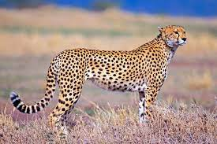
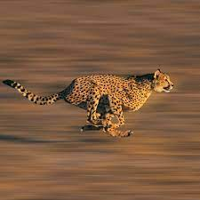
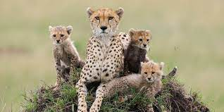
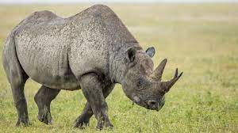
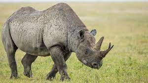

No matter your age, there’s nothing cooler than seeing an exotic animal in its natural habitat. That first time you see a lion hunting alongside its pride or a whale gliding through the ocean, you can’t help but be giddy with childlike excitement.
Your heart beats a little faster and your eyes grow a little wider as the creatures of storybooks and movies come alive right in front of you. If you share our love for wildlife, you know exactly what we’re talking about. Below read about 45 animals around the world and where to see them.
AFRICA When you hear Africa, you can’t help but think of the exotic wildlife and safari experience. A trip to this incredible continent should be on every bucket list, whether you love animals, love culture, or love cuisine – it has it all!Lions

As the largest land animal on the earth, an elephant won’t be hard to miss! African elephants grow to about 13 feet tall and weigh thousands of pounds. Both male and female African elephants have tusks, and they use them to dig for food. They live in the same area as lions – sub-Saharan Africa.
cheetah
  
Cheetahs are the fastest mammals on the earth, and can go from 0-60mph in 3 seconds, putting Speedy Gonzalez to shame. It is incredible to see one moving full speed! Cheetahs can be found in sub-Saharan Africa and Iran.Rhino
 

There are two types of rhinos found in Africa: black rhino and white rhino. The former can be found in South Africa, Namibia, Zimbabwe, and Kenya; the latter is found mainly in South Africa but also Botswana, Namibia, Swaziland, and Zimbabwe.
Rhinos are a prime poaching target and are critically endangered as a result. The Rhinos Without Borders project is relocating rhinos from South Africa to Botswana (this country has strict anti-poaching laws) as an effort to conserve the species.